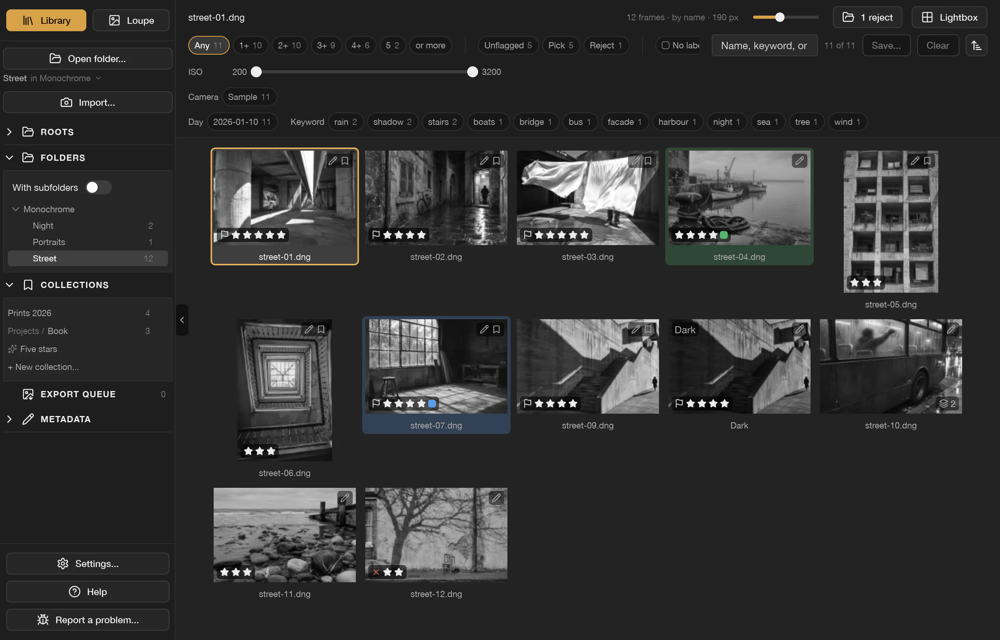
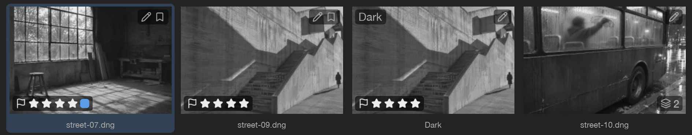
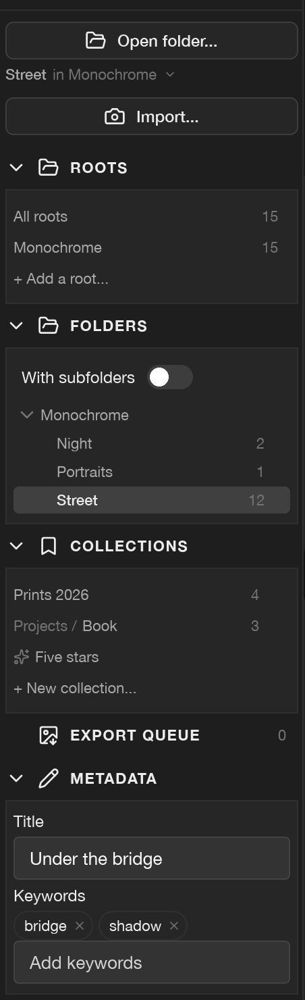
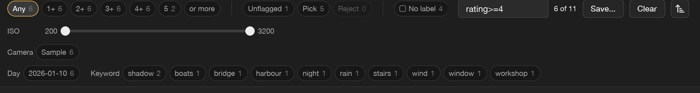

Library
The Library shows your photos as a grid. This chapter describes how to open folders, filter and sort photos, add keywords, and use collections, stacks, and archives. On a Mac, use Cmd where this guide says Ctrl.
Which photos are listed
Monocard lists monochrome photos, and color photos in grey. With Hide color photos on, color photos are not listed, counted, or opened, and when a folder has no monochrome photos, the status line says so. For the exact rule, see Which photos are listed.
A DNG and a JPEG with the same name in the same folder are one photo. The photo has the mark +JPEG, and one rating, flag, label, and set of keywords. To list the JPEG as its own photo, turn on Treat a JPEG beside its raw as a separate frame in Settings.
Open a folder
Click Open folder... at the top of the left pane, or press Ctrl+O. The name of the open folder is below the button. Click the name for the last ten folders.
Library and Loupe at the top of the left pane switch between the grid and one photo.
G does the same. E, Enter, or a double-click opens the photo in the Loupe, and D opens it in Develop. For all the keys, see Keys.
The grid


- Use the arrow keys, Home, and End to move.
- To select more photos, use Ctrl+click or Shift+click. Ctrl+A selects all the photos that are shown.
- To change the size of the tiles, drag Tile size, press + or −, or use Ctrl with the wheel. The size is from 96 to 512 pixels.
- Right-click a photo for its menu.
A photo with an edit shows the edit and not the camera's picture. These marks are at the top right of a thumbnail:
| Mark | Meaning |
|---|---|
| Pencil | The photo has an edit |
| Picture with an arrow | The photo was exported |
| Bookmark | The photo is in a collection |
| +JPEG | The camera's JPEG is with the raw |


A version has its own tile after the photo. A file that cannot be read says Unreadable.
Roots


A root is a folder that you add to your library. Monocard keeps an index of the photos in it, so that you can filter all your roots together. The roots are under ROOTS in the left pane of the grid.
- To add a root, click + Add a root.... To add the open folder, click + Add this folder.
- All roots lists every photo in your library.
- Right-click a root for Rename..., Use as an archive, and Remove from library. These do not change the folder on the disk.
FOLDERS shows the folders inside the open root. Turn on With subfolders to show a folder with everything under it. When it is off, the folders inside the open folder are tiles above the photos.
A folder on your own disk is watched, and new photos show at once. A folder on a network is read again every 10 minutes. You can change the time in Settings.
When the disk of a root is not connected, the root says offline. You can still browse, filter, and cull its photos from the local previews.
The filter bar
The filter bar is in the header of the grid and in the CULLING section. Press Ctrl+F or / to type in it.


| Control | What it shows |
|---|---|
| Stars | Photos with that rating. Click or more to change it to exactly |
| Flag | Unflagged, Pick, or Reject |
| Label | One of the five colors, or no label |
| Camera, Lens, Day | Photos with that value |
| Kind | Raw, JPEG, PNG, or TIFF |
| Keyword | Photos with that keyword |
| ISO, Focal | Photos in a range. Drag the two ends |
Chips of one group add to each other. Chips of different groups narrow each other. Camera, Lens, Day, ISO, and Focal show after Monocard has indexed the folder. Clear shows all the photos again.
Words in the text field find photos by file name or keyword. You can also type terms:
| Term | Example |
|---|---|
camera:, lens:, name:, folder:, keyword: |
camera:GR |
iso, focal, aperture, shutter, focus |
iso>=3200 |
rating |
rating>=3 |
date |
date:2026-09 |
flag |
flag:pick |
label |
label:none |
kind |
kind:raw |
has:versions |
Photos that have a version |
Use =, !=, <, <=, >, and >= for numbers and dates. Put a value that has a space in double quotes.
Sort
Click the arrows at the end of the filter bar. You can sort by Capture time, Name, Rating, Date edited, or Focus, in either direction. Focus is a score of how sharp the sharpest part of the photo is.
Keywords and title
The METADATA section has Title and Keywords. It is in the left pane of the grid, and below the CULLING section in Cull.
- To add a keyword, type it and press Enter or a comma. To remove it, click the x on its chip.
- To keep a title, press Enter.
Both change all the selected photos. A keyword that only some of them have is dimmed. Click it to add it to the others.
Collections
A collection is a list of photos from any folders, in an order that you choose. The photos stay where they are. Collections are under COLLECTIONS in the left pane of the grid.
- To make one, click + New collection....
- To add photos, press B, or right-click and choose Add to collection. Press B again to take them out. On the Develop tab with a monochrome photo, B shows the photo after the edit instead.
- To change the order, drag photos in the grid.
- Right-click a collection for Rename..., Capture order, and Delete.... Delete removes the collection and not its photos.
A smart collection is a saved filter. Set the filter bar, click Save..., and type a name. Its photos change as your ratings change.
Stacks
A stack puts photos of one folder behind one photo.
- To make one, select photos and press Ctrl+G. To undo it, press Ctrl+Shift+G.
- To open or close it, press S in the grid, or click its badge.
- To put a photo on top, press Shift+S in the grid, or choose Set as top of stack in the menu.
- Stack bursts in the menu finds bursts and stacks each one, with its sharpest photo on top.
What you do to a closed stack, such as a rating or an export, is done to its top photo only.
Archives
An archive is a root that holds the long-term copy of your photos, for example on a network drive. Right-click a root and choose Use as an archive.
- Back up copies the photos that are not on the archive, with their edits. Click the cloud button in the header of the grid, or right-click a photo and choose Back up to and the name of the archive.
- Bring back copies photos from the archive to another root.
Each copy is checked, and a picture on the archive is never written over.
Where your edits are kept
The edit, rating, flag, label, and keywords of a photo are in an .mcd file beside it. See Where your edits are kept. Monocard can also write an .xmp file for other programs. See Sidecars.